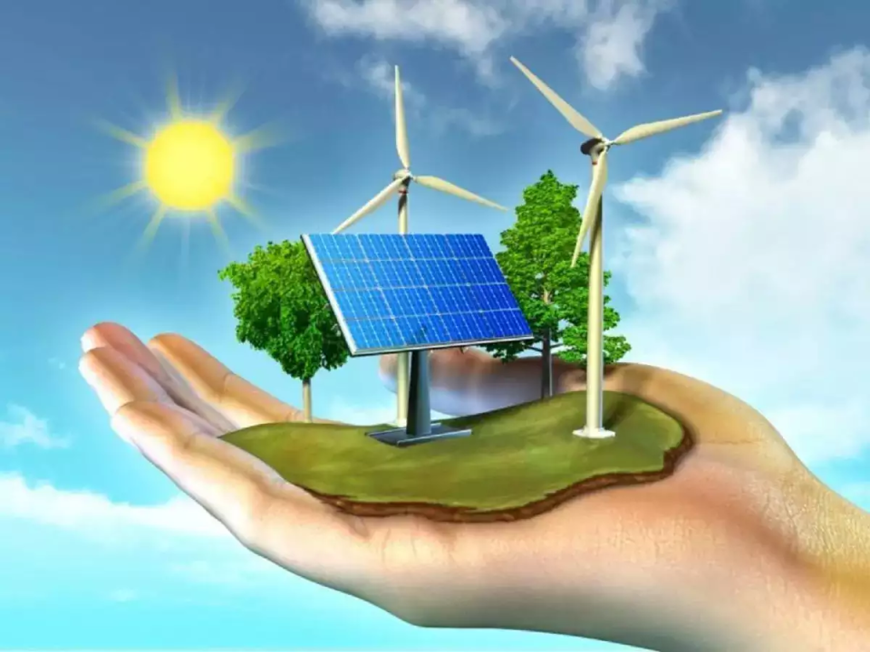
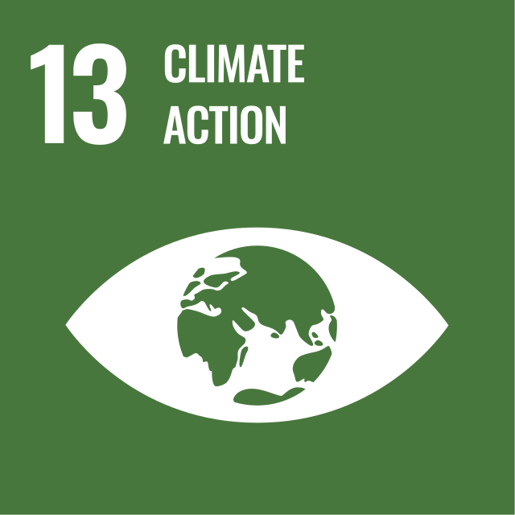

SDGs ke-13 -> 🤝🔄Climate Action🌳🌱


SDGs ke-13 ini berisi tentang "Climate Action" atau dapat diartikan juga sebagai Penanganan Perubahan Iklim bertujuan untuk mengambil tindakan segera untuk melawan perubahan iklim dan dampaknya. Tujuan ini meningkatkan kebijakan perubahan iklim ke dalam perencanaan nasional, peningkatan pendidikan dan kesadaran tentang perubahan iklim, serta mobilisasi dana untuk mendukung negara berkembang.
Tujuan SDGs 13
- Meningkatkan pendidikan dan ketahanan masyarakat
- Mengambil tindakan segera untuk mengatasi perubahan iklim
- Mempromosikan langkah mitigasi & adaptasi di berbagai sektor
ℹ️Kondisi Terkini SDGs 13🍃🌐
Menurut BMKG, Perubahan Iklim adalah perubahan jangka panjang dalam pola suhu, curah hujan, dan fenomena cuaca lainnya di Bumi. Perubahan iklim ini menjadi sebuah tantangan global yang signifikan, dengan dampak yang semakin nyata seperti kenaikan suhu global terus-menerus yanf menyebabkan cuaca ekstrem, kenaikan permukaan laut, dan gangguan ekosistem dengan melelehnya es di daerah kutub. Banyak negara menghadapi kesulitan dalam mengurangi polusi dan emisi yang jika dibiarkan dapat memperparah perubahan iklim.
Hujan & Banjir Ekstrem
Wilayah Padang di Sumatera Barat mengalami banjir besar akibat hujan intens dan luapan sungai. Sebanyak 27.433 warga dari sembilan kecamatan terdampak, dengan berbagai kerusakan di rumah, jalanan, dan fasilitas umum lainnya. Perubahan iklim yang terus meningkat membuat atmosfer mampu menahan lebih banyak uap air sehingga menjadi penyebab utama dari hujan deras dan banjir besar.
Read More!
Rusaknya Ekosistem
Kepulauan Togean di Sulawesi Tengah menawarkan keindahan bawah laut yang penuh dengan terumbu karang. Namun sekarang ekosistem ini juga terdampak dengan perubahan iklim yaitu coral bleaching yang menyebabkan kematian spesies. Menurut laporan G20 Climate Risk Atlas 2021, suhu rata-rata di perairan Indonesia diprediksi akan naik terus-menerus hingga 2050. Bahkan, dilaporkan pada tahun 2021 bahwa 60% terumbu karang di sana sudah mengalami kerusakan.
Read More!
Kekeringan dan Gagal Panen
Perubahan pola curah hujan dan suhu ekstrem menyebabkan kekeringan dan banjir parah sehingga petani mengalami gagal panen. Hal ini memaksa para petani untuk beralih mata pencaharian dan menanam tanaman yang lebih tahan kekeringan. Gagal panen tidak hanya berdampak pada produksi pangan, tetapi juga menimbulkan ketidakstabilan ekonomi misalnya kenaikan harga pangan yang sering gagal panen.
Read More!
💥Tantangan SDG ke-13
1. Ekonomi
Indonesia membutuhkan dana yang besar untuk melakukan transisi dan adaptasi teknologi untuk melawan perubahan iklim. Maka, sering terjadi kekurangan dana, terutama dalam memenuhi target energi terbarukan dan pengurangan emisi gas rumah kaca.
2. Sosial dan Pengetahuan
Di Indonesia, mengurangi perubahan iklim sulit dilakukan karena masyarakatnya sendiri tidak mempunyai kesadaran dan pendidikan tentang perubahan iklim. Banyak masyarakat yang masih belum memahami dampak dan bahayanya serta pentingnya aksi ramah lingkungan.
3. Politik dan Regulasi
Implementasi kebijakan lingkungan di Indonesia sering terhambat oleh izin dan proses politik yang rumit yang menyebabkan pelaksanaan program-program kurang efektif. Selain itu, pemerintah juga banyak mengutamakan kepentingan ekonomi sehingga lebih memilih melakukan eksploitasi SDA tak terbarukan dibanding mengeluarkan lebih banyak dana untuk energi yang ramah lingkungan.
4. Perubahan Pola Konsumsi
Mengubah pola konsumsi masyarakat yang sulit dilakukan karena gaya hidup yang konsumtif dan ketergantungan pada energi tak terbarukan. Bahkan, masyarakat Indonesia juga tidak mengolah limbah dengan baik sehingga menyebabkan pencemaran dan memperburuk dampak perubahan iklim.
🌿Potensi SDG ke-13📈
Indonesia memiliki berbagai kekuatan yang dapat dimanfaatkan untuk mempercepat aksi iklim. Potensi ini berasal dari sumber daya alam, sumber daya manusia, teknologi, dan kebijakan nasional.
1. Potensi Sumber Daya Alam : Indonesia memiliki biodiversitas yang melimpah seperti energi terbarukan dan hutan yang luas dan lebat sehingga dapat menyerap karbon dan mengurangi proses perubahan iklim.
2. Potensi Sumber Daya Manusia: Indonesia memiliki generasi muda yang semakin modern dan sadar akan pentingnya kelestarian lingkungan. Generasi baru yang berpendidikan dapat memulai gaya hidup berkelanjutan dan mendorong aksi-aksi ramah lingkungan.
3. Teknologi: Kemajuan teknologi dan sosial media di Indonesia, mendorong inovasi di sektor energi terbarukan, pertanian berkelanjutan, dan transportasi ramah lingkungan, serta memudahkan penyebaran aksi-aksi mengatasi perubahan iklim.
4. Edukasi: Pemerintah dapat menambah kesadaran masyarakat tentang perubahan iklim melalui edukasi, seminar, dan juga materi isu iklim dalam kurikulum pendidikan.